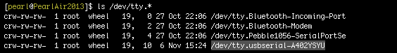

Identify the “usbserial” device name
Use the ls /dev/tty.* command in Terminal to find the device name of the “usbserial” connection. You will need the exact device name for use in Establish a serial connection later.

-
Launch Terminal.
Option 1:
- Launch Spotlight (type Cmd+Space).
- Type “terminal”.
- Select the “Terminal” app.
Option 2:
- Go to Applications on your Mac.
- Open Utilities.
- Launch Terminal.app.
-
Use the “ls” command to list any connected devices.
ls /dev/tty.* -
Look for a device that contains “usbserial”.

In this case, the device found was “/dev/tty.usbserial-A402YSYU”.
Don’t see a “usbserial” device listed?
-
Do you have the UART/serial cable connected? Refer to UART/serial micro-USB cable.
-
Is your IoT board powered on?